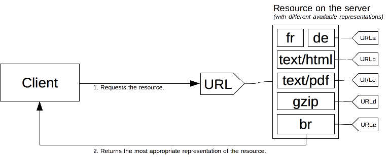
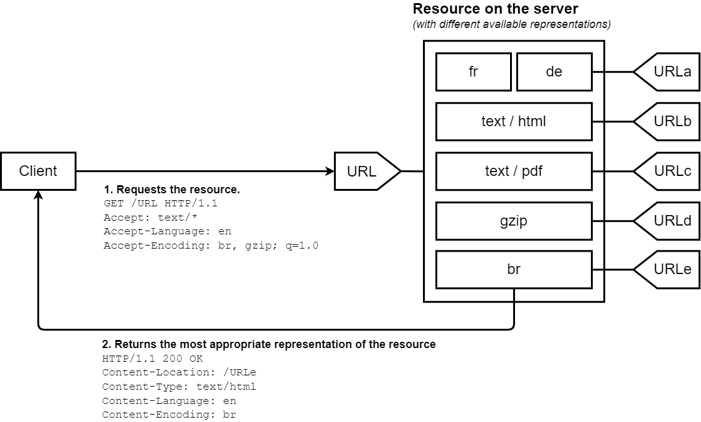
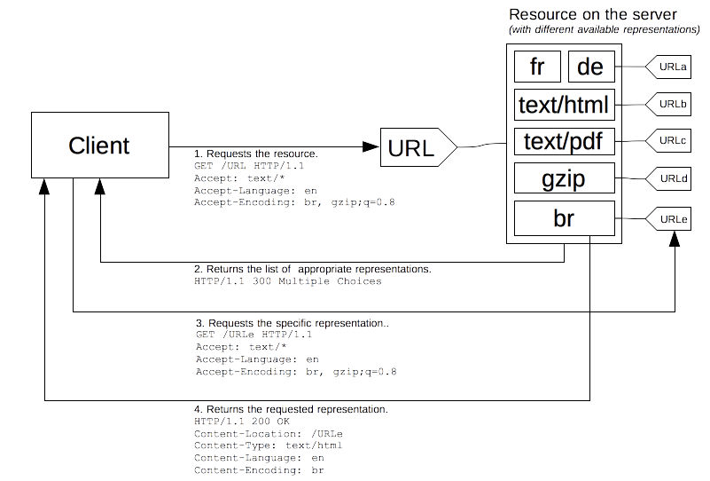

Content negotiation
In HTTP, content negotiation is the mechanism that is used for serving different representations of a resource to the same URI to help the user agent specify which representation is best suited for the user (for example, which document language, which image format, or which content encoding).
Note:
You'll find some disadvantages of HTTP content negotiation in a wiki page from WHATWG. HTML provides alternatives to content negotiation via, for example, the <source> element.
Principles of content negotiation
A specific document is called a resource. When a client wants to obtain a resource, the client requests it via a URL. The server uses this URL to choose one of the variants available–each variant is called a representation–and returns a specific representation to the client. The overall resource, as well as each of the representations, has a specific URL. Content negotiation determines how a specific representation is chosen when the resource is called. There are several ways of negotiating between the client and the server.

The best-suited representation is identified through one of two mechanisms:
- Specific HTTP headers by the client (server-driven negotiation or proactive negotiation), which is the standard way of negotiating a specific kind of resource.
- The
300(Multiple Choices) or406(Not Acceptable),415(Unsupported Media Type) HTTP response codes by the server (agent-driven negotiation or reactive negotiation), that are used as fallback mechanisms.
Over the years, other content negotiation proposals, like transparent content negotiation and the Alternates header, have been proposed. They failed to get traction and were abandoned.
Server-driven content negotiation
In server-driven content negotiation, or proactive content negotiation, the browser (or any other kind of user agent) sends several HTTP headers along with the URL. These headers describe the user's preferred choice. The server uses them as hints and an internal algorithm chooses the best content to serve to the client. If it can't provide a suitable resource, it might respond with 406 (Not Acceptable) or 415 (Unsupported Media Type) and set headers for the types of media that it does support (e.g., using the Accept-Post or Accept-Patch for POST and PATCH requests, respectively). The algorithm is server-specific and not defined in the standard. See the Apache negotiation algorithm.

The HTTP/1.1 standard defines list of the standard headers that start server-driven negotiation (such as Accept, Accept-Encoding, and Accept-Language). Though User-Agent isn't in this list, it's sometimes also used to send a specific representation of the requested resource. However, this isn't always considered a good practice. The server uses the Vary header to indicate which headers it actually used for content negotiation (or more precisely, the associated request headers), so that caches can work optimally.
In addition to these, there's an experimental proposal to add more headers to the list of available headers, called client hints. Client hints advertise what kind of device the user agent runs on (for example, a desktop computer or a mobile device).
Even if server-driven content negotiation is the most common way to agree on a specific representation of a resource, it has several drawbacks:
- The server doesn't have total knowledge of the browser. Even with the Client Hints extension, it doesn't have a complete knowledge of the capabilities of the browser. Unlike reactive content negotiation where the client makes the choice, the server choice is always somewhat arbitrary.
- The information from the client is quite verbose (HTTP/2 header compression mitigates this problem) and a privacy risk (HTTP fingerprinting).
- As several representations of a given resource are sent, shared caches are less efficient and server implementations are more complex.
The Accept header
The Accept header lists the MIME types of media resources that the agent is willing to process. This is a comma-separated list of MIME types, each combined with a quality factor, a parameter that indicates the relative degree of preference between the different MIME types.
The Accept header is defined by the browser, or any other user agent, and can vary according to the context. For example, fetching an HTML page or an image, a video, or a script. It's different when fetching a document entered in the address bar or an element linked via an <img>, <video>, or <audio> element. Browsers are free to use the value of the header that they think is the most adequate; an exhaustive list of default values for common browsers is available.
The Accept-CH header
Note: This is part of an experimental technology called Client Hints. Initial support comes in Chrome 46 or later. The Device-Memory value is in Chrome 61 or later.
The experimental Accept-CH lists configuration data that the server can use to select an appropriate response. Valid values are:
| Value | Meaning |
|---|---|
Device-Memory |
Indicates the approximate amount of device RAM. This value is an approximation given by rounding to the nearest power of 2 and dividing that number by 1024. For example, 512 megabytes will be reported as 0.5. |
Viewport-Width |
Indicates the layout viewport width in CSS pixels. |
Width |
Indicates the resource width in physical pixels (in other words the intrinsic size of an image). |
The Accept-Encoding header
The Accept-Encoding header defines the acceptable content encoding (supported compressions). The value is a q-factor list (e.g., br, gzip;q=0.8) that indicates the priority of the encoding values. The default value identity is at the lowest priority (unless otherwise noted).
Compressing HTTP messages is one of the most important ways to improve the performance of a website. It shrinks the size of the data transmitted and makes better use of the available bandwidth. Browsers always send this header and the server should be configured to use compression.
The Accept-Language header
The Accept-Language header is used to indicate the language preference of the user. It's a list of values with quality factors (e.g., de, en;q=0.7). A default value is often set according to the language of the graphical interface of the user agent, but most browsers allow different language preferences to be set.
Due to the configuration-based entropy increase, a modified value can be used to fingerprint the user. It's not recommended to change it and a website can't trust this value to reflect the actual intention of the user. It's best for site designers to avoid using language detection via this header as it can lead to a poor user experience.
- They should always provide a way to override the server-chosen language, e.g., by providing a language menu on the site. Most user agents provide a default value for the
Accept-Languageheader that's adapted to the user interface language. End users often don't modify it because they either don't know how or aren't able to do so based on their computing environment. - Once a user has overridden the server-chosen language, a site should no longer use language detection and should stick with the explicitly chosen language. In other words, only entry pages for a site should use this header to select the proper language.
The User-Agent header
Note: Though there are legitimate uses of this header for selecting content, it's considered bad practice to rely on it to define what features are supported by the user agent.
The User-Agent header identifies the browser sending the request. This string may contain a space-separated list of product tokens and comments.
A product token is a name followed by a / and a version number, like Firefox/4.0.1. The user agent can include as many of these as it wants. A comment is an optional string delimited by parentheses. The information provided in a comment isn't standardized, though several browsers add several tokens to it separated by ;.
The Vary response header
In contrast to the previous Accept-* headers, which are sent by the client, the Vary HTTP header is sent by the web server in its response. It indicates the list of headers the server uses during the server-driven content negotiation phase. The Vary header is needed to inform the cache of the decision criteria so that it can reproduce it. This allows the cache to be functional while ensuring that the right content is served to the user.
The special value * means that the server-driven content negotiation also uses information not conveyed in a header to choose the appropriate content.
The Vary header was added in version 1.1 of HTTP and allows caches to work appropriately. To work with server-driven content negotiation, a cache needs to know which criteria the server used to select the transmitted content. That way, the cache can replay the algorithm and will be able to serve acceptable content directly, without more requests to the server. Obviously, the wildcard * prevents caching from occurring, as the cache can't know what element is behind it. For more information, see HTTP caching > Varying responses.
Agent-driven negotiation
Server-driven negotiation has a few drawbacks: it doesn't scale well. One header per feature is used in the negotiation. If you want to use screen size, resolution, or other dimensions, you need to create a new HTTP header. The headers must then be sent with every request. This isn't an issue if there are only a few headers, but as the number of headers increases, the message size could eventually affect performance. The more precisely headers are sent, the more entropy is sent, allowing for more HTTP fingerprinting and corresponding privacy concerns.
HTTP allows another negotiation type: agent-driven negotiation or reactive negotiation. In this case, the server sends back a page that contains links to the available alternative resources when faced with an ambiguous request. The user is presented the resources and chooses the one to use.

Unfortunately, the HTTP standard doesn't specify the format of the page for choosing between the available resources, which prevents the process from being automated. Besides falling back to the server-driven negotiation, this method is almost always used with scripting, especially with JavaScript redirection: after having checked for the negotiation criteria, the script performs the redirection. A second problem is that one more request is needed to fetch the real resource, slowing the availability of the resource to the user.